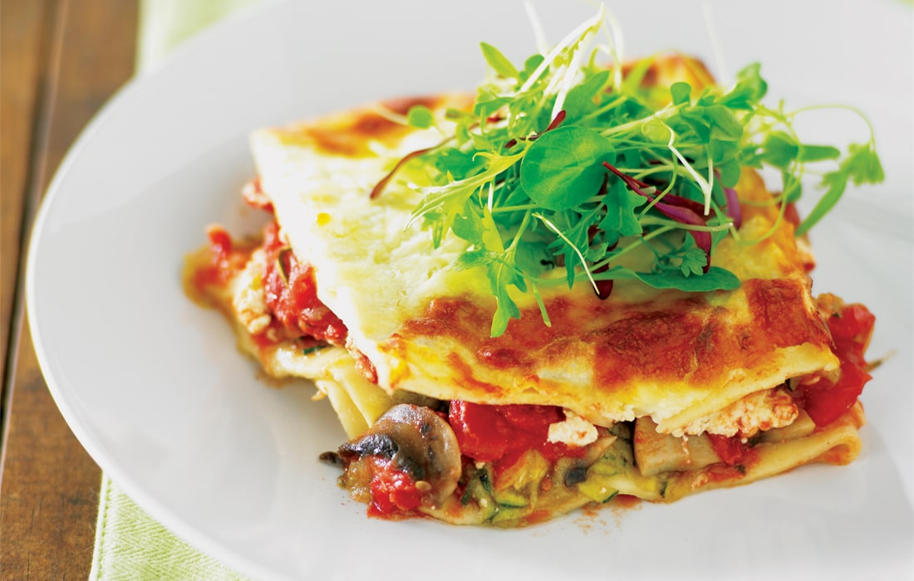

Vegetarian Lasagna Recipe
Instructions:
- Cook lasagna noodles according to package instructions.
- Heat olive oil in a pan, sauté onion and garlic until soft.
-
Add chopped red bell pepper, zucchini, yellow squash, and
mushrooms. Cook until vegetables are tender.
-
Stir in diced tomatoes, tomato sauce, oregano, basil, salt, and
pepper. Simmer for a few minutes.
- In a separate bowl, mix ricotta cheese with spinach leaves.
- Preheat oven to 375°F (190°C).
-
In a saucepan, melt butter, stir in flour, then gradually add
milk, whisking until thickened to make a white sauce.
-
In a baking dish, layer noodles, vegetable mixture,
ricotta-spinach mixture, mozzarella cheese, and white sauce.
Repeat layers.
- Top with Parmesan cheese.
- Bake for 30-35 minutes until golden and bubbly.
-
Let it cool for a few minutes before serving. Enjoy your
vegetarian lasagna!
Ingredients:
- Lasagna noodles
- Olive oil
- Onion
- Garlic
- Red bell pepper
- Zucchini
- Yellow squash
- Mushrooms
- Canned diced tomatoes
- Tomato sauce
- Dried oregano
- Dried basil
- Salt
- Pepper
- Fresh spinach
- Ricotta cheese
- Mozzarella cheese
- Parmesan cheese
- Butter
- All-purpose flour